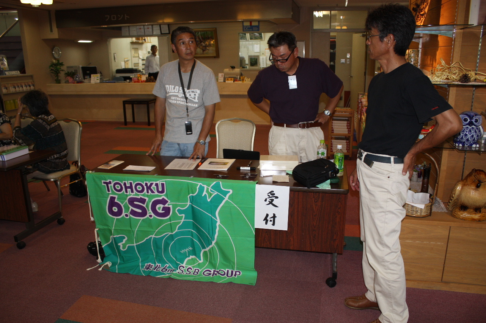
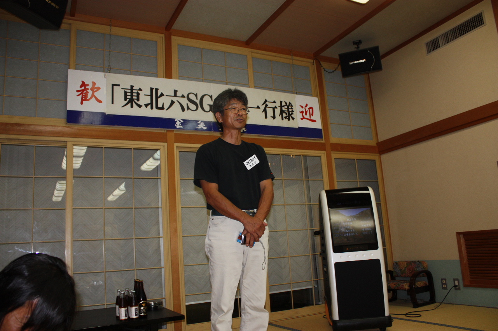
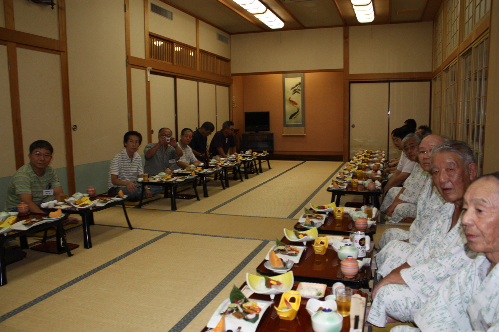
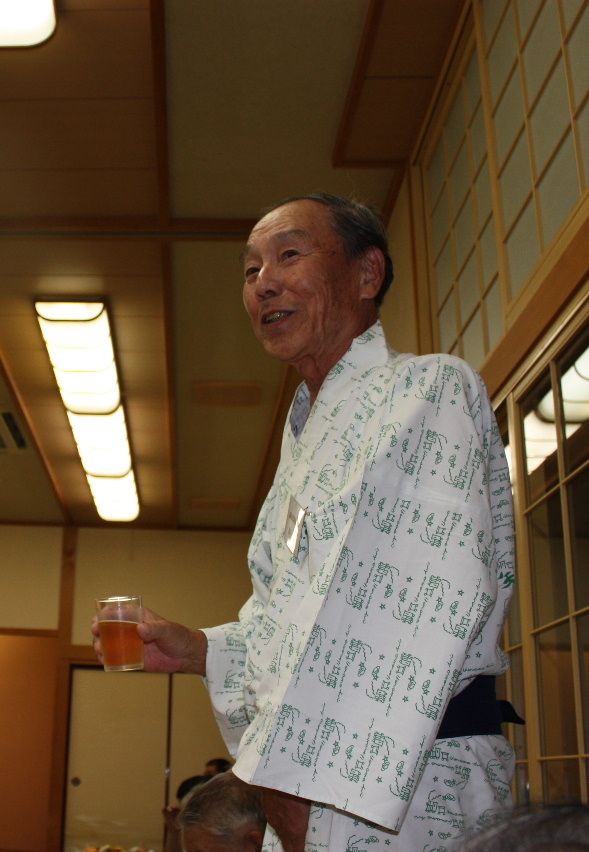
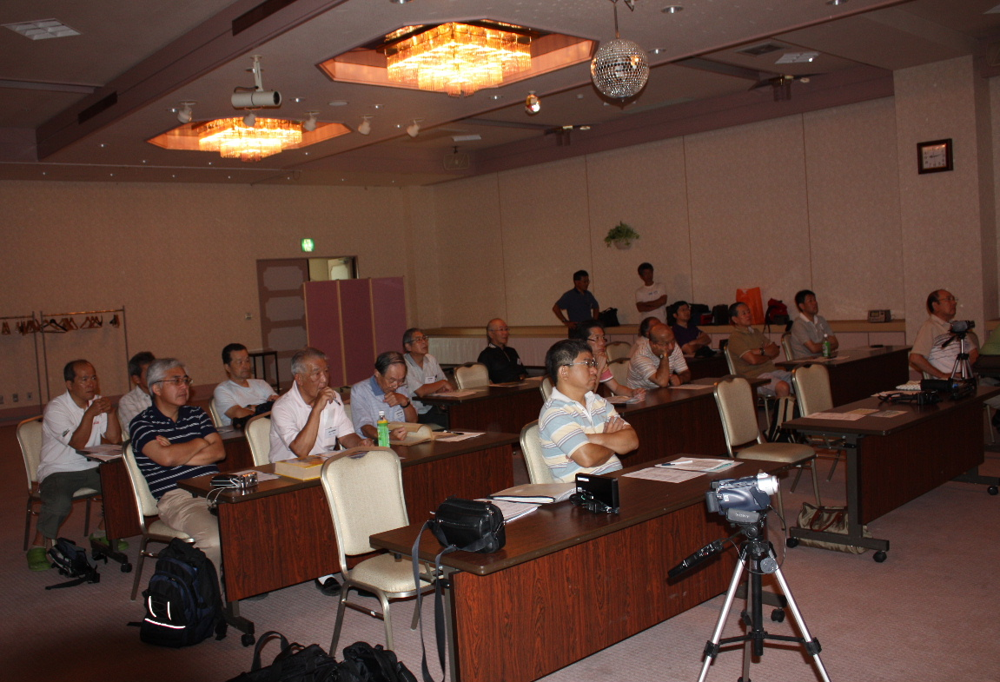
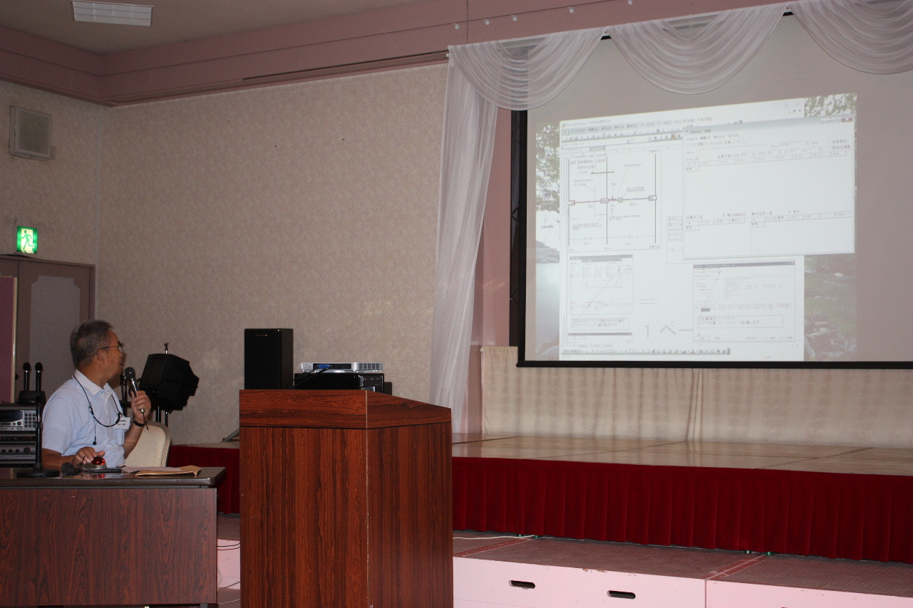
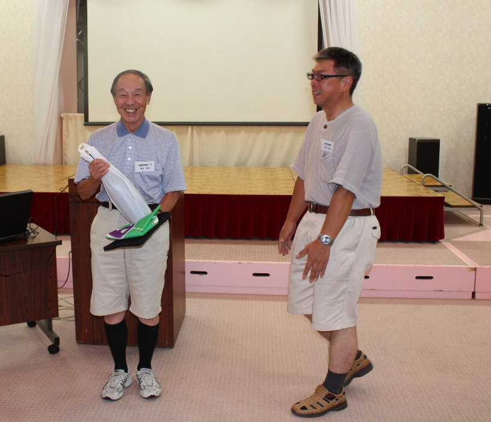
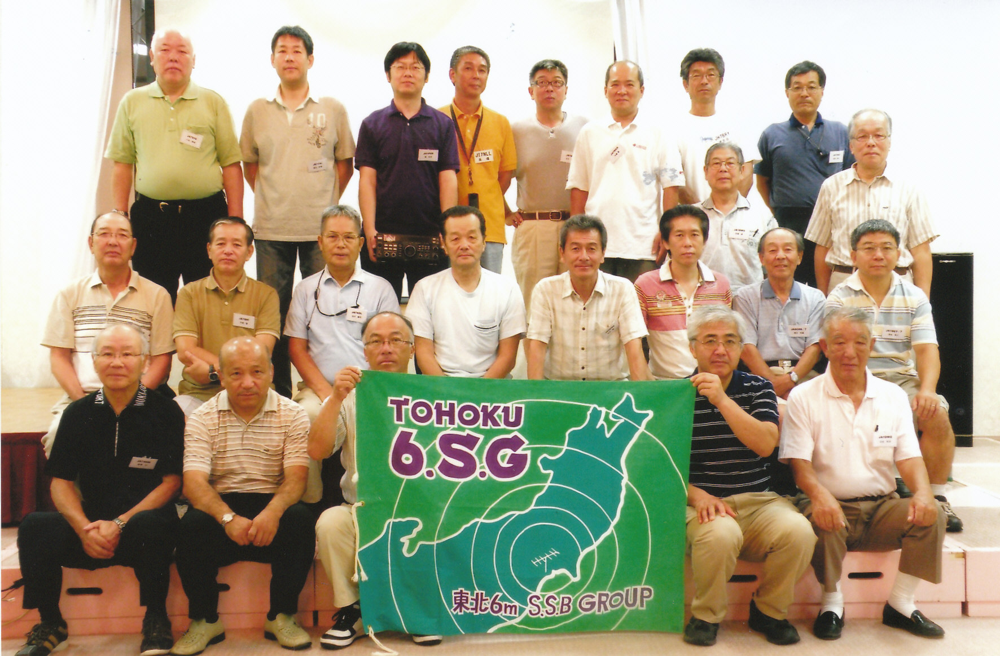

| ||||||||||||||
| 1997 | 1998 | 1999 | 2000 | 2001 | 2002 | 2003 | 2004 | 2005 | 2006 | 2007 | 2008 | 2009 | 2010 |
|
◎ 第39回東北6SGミーティング・岩手県花巻温泉大会開催 第39回東北6SGミーティングが2010年9月04日-05日の両日、岩手県花巻市金矢5-251-1の金矢温泉で開催された。 夏のEsシーズンも一段落した9月に入っても、日本列島は30度を越える異常気象が続く中での開催だった。 東北地方はお盆を過ぎる8月中旬には秋風が吹いて涼しくなるのだが、岩手県下もこの日は30度を超える夏日だった。 この日、花巻温泉に駆けつけた参加者は1エリアからの4局を含め24局が年に一度の"アイボールQSO"を楽しんだ。 |




|
翌9月05日(日)の講演会は、JA7AGL・相沢さんから、
昨年に引き続いてHF帯でも注目されている14MHz〜50MHzまで1本の同軸ケーブルで使える、
SteppIRのマルチバンダー3ELアンテナに50MHz帯専用のエレメントを付加して7EL化する改造方法の再紹介と、
アンテナ・シュミレーションソフト「MMANA」による詳細なデータが紹介された。 続いて、JA1RJU/JA7JUから「中国のアマチュア無線事情など」と題して、 25年前の1985年のJARLの第5次訪中団から、今年の8月8日に中国・広州市で行われたFCCの試験開催の模様まで、 急速に変貌を遂げている中国のアマチュア無線の現状が紹介された。 また、7月18日に50MHzで運用され177局とQSOしたタイ国のHS0ACの運用の模様なども簡単に紹介された。 最後に6SGミーティングの次期開催地として「2011年・山形」の開催を決定、 "6SGの旗"が今回の岩手の幹事から山形の幹事(JA8CRB/7)に引き継がれ、 12:00時に2010年岩手大会は無事終了した。   MMANAの使い方を解説するJA7AGL・相沢さん
 6SGの旗は岩手から次期開催地の山形に引継がれた。
【 第39回東北6m SSB Group ミーティング参加者 】
JA7AGL. JA7AHK. JA7CSS. JA7EIQ. JA7JWF. JA7KHQ
JA7MIT. JA7QVI. JA7WSZ. JH7BRY. JH7MQU. JH7MSB
JH7UPW. JH7WER. JH7XRZ. JE7CAI. JI7NLL. JR7AIW
JK1BEY/7.JA1BWD. JA1DWQ. JA1RJU. JO1PSX. JA8CRB/7
 第39回東北6SGミーティングに参加した各局 |
|
◎ 第39回東北6SGミーティング・開催のご案内 皆様におかれましては、多岐にわたりご活躍のことと思います。下記の日程で6SGミーティングを開催いたします。 多忙とは存知ますが、参加頂ければさいわいです。 日 時: 2010年9月4日(土) 16:00時受付開始 5日(日) ミーティング 場 所: 金矢温泉(電話：0198-27-2811) 岩手県花巻市金矢5-251-1 会 費: 14,000円（当日、会場受付にて徴収いたします） 締め切り:定員になり次第締め切ります。 連絡先：津志田祐一(JH7BRY) jh7bry@nifty.com 0195-77-2465 (21:00時以降) スタッフ：JH7XRZ(高橋)、JR7AIW(田村)、JI7NLL(高橋)、JL7IWF(中軽米) --------------------------------------------------------******************************************************************************* |